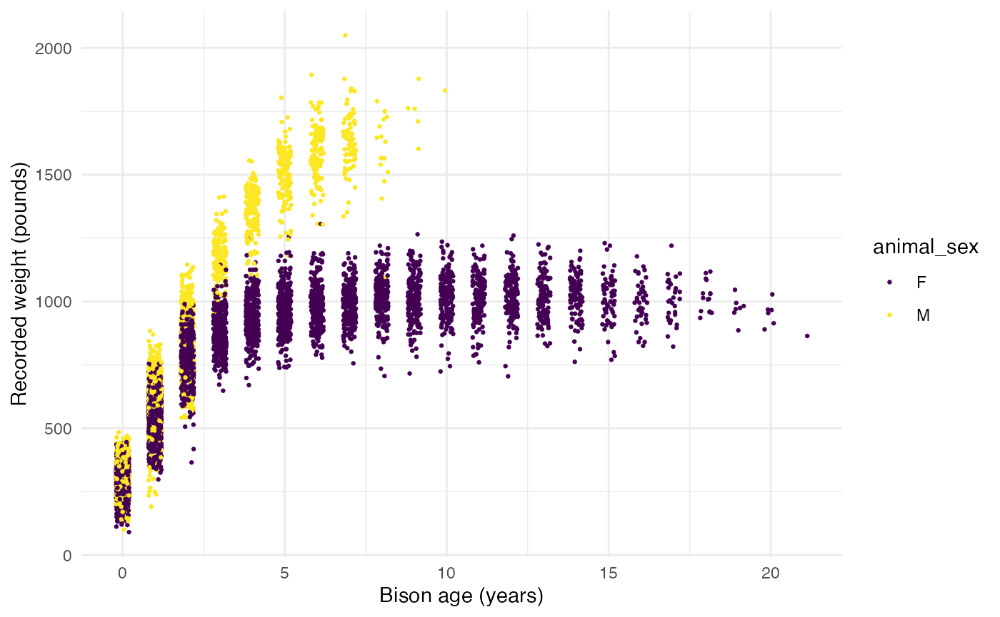
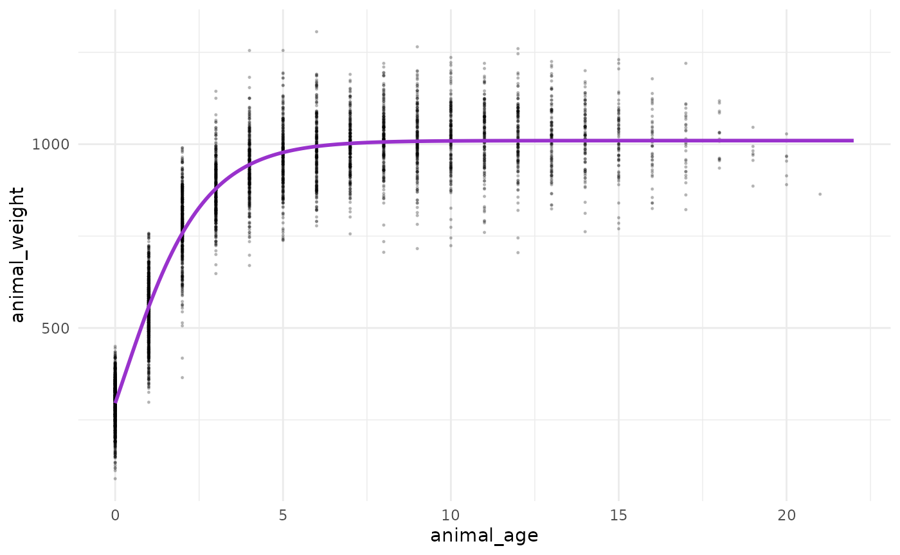

knz_bison - Konza Prairie Bison Weights (KNZ)
Historical records of end-of-season weights for individual bison at Konza Prairie Biological Station LTER
Source:vignettes/knz_bison_vignette.Rmd
knz_bison_vignette.RmdIntroduction
The knz_bison data provides age and weight records for the bison herd at Konza Prairie Biological Station LTER (KPBS) in Kansas.
The vignette highlights:
- An example of modeling bison weight (as a function of age) using the Gompertz model with
nls - Use of the
broompackage to tidy up outputs ofnlsfor easier use
From Konza Prairie LTER Researcher Jeffrey Taylor: “Nearly 300 bison graze KPBS year-round without supplementary feed and with minimal human intervention, living as ‘naturally’ as possible. Bison were reintroduced in 1987, and collection of weight data began in 1994, making this dataset the longest continuous record of wild ungulate weight gain anywhere in the world. A round-up is conducted once annually at the end of the grazing season wherein each bison is weighed, calves are vaccinated and receive unique IDs, and excess individuals are culled.”


Data exploration
Attach required packages:
Let’s take a look at the existing knz_bison data sample:
knz_bison
#> # A tibble: 8,325 × 8
#> data_code rec_year rec_month rec_day animal_code animal_sex animal_weight
#> <chr> <dbl> <dbl> <dbl> <chr> <chr> <dbl>
#> 1 CBH01 1994 11 8 813 F 890
#> 2 CBH01 1994 11 8 834 F 1074
#> 3 CBH01 1994 11 8 B-301 F 1060
#> 4 CBH01 1994 11 8 B-402 F 989
#> 5 CBH01 1994 11 8 B-403 F 1062
#> 6 CBH01 1994 11 8 B-502 F 978
#> 7 CBH01 1994 11 8 B-503 F 1068
#> 8 CBH01 1994 11 8 B-504 F 1024
#> 9 CBH01 1994 11 8 B-601 F 978
#> 10 CBH01 1994 11 8 B-602 F 1188
#> # … with 8,315 more rows, and 1 more variable: animal_yob <dbl>We can calculate each bison’s age at observation by subtracting the year of birth (animal_yob) from the record year (rec_year), adding a new column called animal_age using dplyr::mutate():
Now, we’ll explore bison weight as a function of age (in years), separated by sex:
ggplot(data = knz_bison_age, aes(x = animal_age, y = animal_weight, group = animal_sex)) +
geom_point(aes(color = animal_sex),
size = 0.5,
position = position_jitter(width = 0.2, height = 0)) +
labs(x = "Bison age (years)",
y = "Recorded weight (pounds)") +
scale_color_viridis_d() +
theme_minimal()
#> Warning: Removed 252 rows containing missing values (geom_point).
Gompertz model (with nonlinear least squares)
As used by Martin and Barboza (2020), bison body mass as a function of age can be modeled using a sex-specific Gompertz model:
\[BM =b1*exp(-exp(-b2*(age-b3)))\] Where \(b1\) is the asymptotic body mass (pounds), \(b2\) is instantaneous growth-rate at inflection point, and \(b3\) is age at inflection point (years).
Using nonlinear least squares (nls) to estimate \(b1\), \(b2\) and \(b3\) requires starting estimates for each. We will use the following (based on visualizations above, and estimates from Supplemental Materials for Martin and Barbosa (2020):
Female bison parameter initial estimates:
- \(b1\) initial estimate: 1000 pounds
- \(b2\) initial estimate: 1
- \(b3\) initial estimate: 0.6
Use nls() to model growth for female bison
Isolate just the female bison (note that this starts from the dataset knz_bison_age created above that contains the calculated bison age, stored as animal_age):
Use nls to estimate parameters (note: add trace = TRUE to print iterative estimates):
bison_f_gompertz <- nls(animal_weight ~ gompertz(b1, b2, b3, animal_age),
data = bison_f,
start = list(b1 = 1000, b2 = 1, b3 = 0.6),
trace = TRUE)
#> 5.291715e+07 (7.61e-01): par = (1000 1 0.6)
#> 3.442663e+07 (1.91e-01): par = (1007.201 0.6930941 0.3444975)
#> 3.320797e+07 (7.02e-03): par = (1009.67 0.7250854 0.2798164)
#> 3.320631e+07 (1.28e-04): par = (1009.764 0.727529 0.2832794)
#> 3.320631e+07 (3.11e-06): par = (1009.756 0.7275973 0.2832921)Plot the predicted masses with the observed data
# Create a new series of ages
age_series <- seq(0, 22, by = 0.1)
# Make predictions using the model over those times:
pred <- predict(bison_f_gompertz, list(animal_age = age_series))
# Bind the predictions and age sequence together into a data frame:
bison_f_predicted <- data.frame(age_series, pred)
# Plot the observed data and predictions together:
ggplot() +
geom_point(data = bison_f,
aes(x = animal_age, y = animal_weight),
size = 0.3,
alpha = 0.2) +
geom_line(data = bison_f_predicted,
aes(x = age_series, y = pred),
color = "darkorchid",
size = 1) +
theme_minimal()
#> Warning: Removed 236 rows containing missing values (geom_point).
Explore & use model outputs with broom
The wonderful broom package “summarizes key information about models in tidy tibbles.” For example, the broom::tidy() function summarizes important model information:
# Put model outputs into a tidy tibble:
bison_f_gompertz_tidy <- bison_f_gompertz %>% broom::tidy()
# Check it out!
bison_f_gompertz_tidy
#> # A tibble: 3 × 5
#> term estimate std.error statistic p.value
#> <chr> <dbl> <dbl> <dbl> <dbl>
#> 1 b1 1010. 1.90 531. 0
#> 2 b2 0.728 0.00755 96.4 0
#> 3 b3 0.283 0.00806 35.1 4.76e-242We can also use the broom::glance() function to return important information about the model overall:
bison_f_gompertz %>% broom::glance()
#> # A tibble: 1 × 9
#> sigma isConv finTol logLik AIC BIC deviance df.residual nobs
#> <dbl> <lgl> <dbl> <dbl> <dbl> <dbl> <dbl> <int> <int>
#> 1 81.1 TRUE 0.00000311 -29358. 58724. 58750. 33206307. 5046 5049We can use broom::augment() to added predicted values and residuals for each of the existing bison in the bison_f data frame:
augment(bison_f_gompertz)
#> # A tibble: 5,049 × 4
#> animal_age animal_weight .fitted .resid
#> <dbl> <dbl> <dbl> <dbl>
#> 1 13 890 1010. -120.
#> 2 11 1074 1009. 64.7
#> 3 11 1060 1009. 50.7
#> 4 10 989 1009. -19.9
#> 5 10 1062 1009. 53.1
#> 6 9 978 1008. -30.0
#> 7 9 1068 1008. 60.0
#> 8 9 1024 1008. 16.0
#> 9 8 978 1006. -28.1
#> 10 8 1188 1006. 182.
#> # … with 5,039 more rowsNote: There are additional related datasets for this data package, containing information for the number of male and female bison per age category and bison maternal parentage (calves matched to mother by ear tags). We encourage you to check them out for more analysis opportunities with the Konza Prairie bison!
Acknowledgements
Thank you to Konza Prairie LTER Information Manager Yang Xia for reviewing this vignette and reaching out to researchers on the project, and to Konza Prairie LTER Researcher Jeffrey Taylor for providing photos and sharing additional information on the bison data.
Citations
Blair, J. 2021. CBH01 Konza Prairie bison herd information ver 12. Environmental Data Initiative. https://doi.org/10.6073/pasta/9c641b35695abc5889edd64c3950517f (Accessed 2021-10-18).
Martin, JM and Barboza PS (2020). Decadal heat and drought drive body size of North American bison (Bison bison) along the Great Plains. Ecology and Evolution 10 (1): 336 - 349. https://doi.org/10.1002/ece3.5898.
Robinson, D, Hayes A and Couch S (2021). broom: Convert Statistical Objects into Tidy Tibbles. R package version 0.7.8. https://CRAN.R-project.org/package=broom
How we processed the raw data
Download the raw data from EDI.org
# Attach packages
library(usethis)
library(metajam)
library(dplyr)
# Save link location for the data package:
knz_url <- "https://portal.edirepository.org/nis/dataviewer?packageid=knb-lter-knz.78.12&entityid=0921d9c31d67badeb940f7352886134e"
# Download the data package with metajam
knz_download <- download_d1_data(data_url = knz_url, path = tempdir(), dir_name="knz_bison")
# Read in data
knz_files <- read_d1_files(knz_download)Data preparation
knz_bison <- knz_files$data %>%
janitor::clean_names() %>%
select(-rec_type)